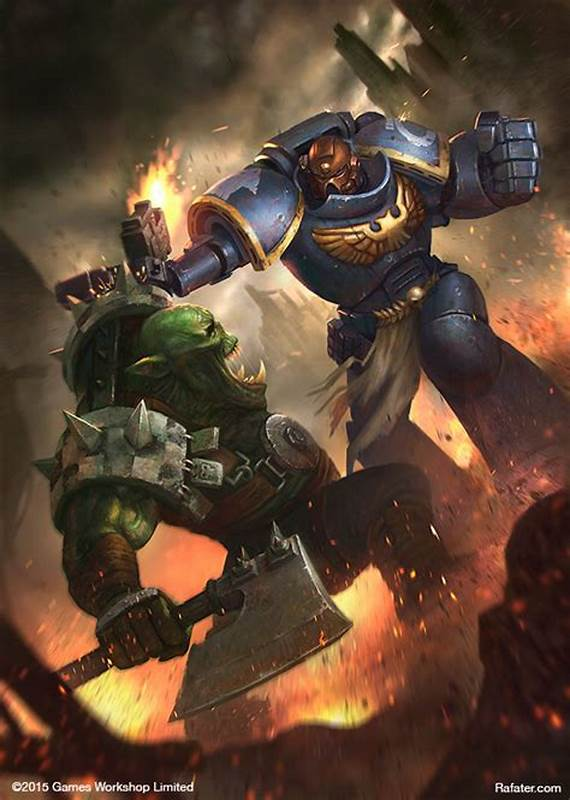
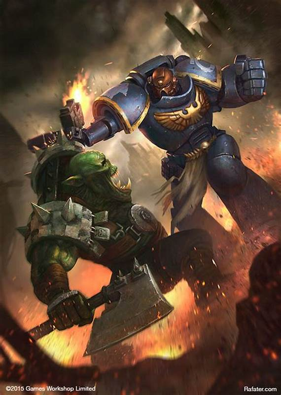

FUEGO PESADO
Algunas legiones prefieren acercamientos a la guerra con armas y equipamiento pesado. Para la destrucción total y abrupta del enemigo.

LÓGICA
Otras, en cambio, son mas conservadoras con sus ideas y prácticas.
Algunas legiones prefieren acercamientos a la guerra con armas y equipamiento pesado. Para la destrucción total y abrupta del enemigo.
Otras, en cambio, son mas conservadoras con sus ideas y prácticas.
